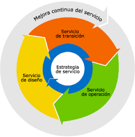
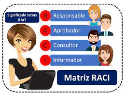

Awopedia 🤯
Awopedia 🤯


Caso de Estudio
NH Stone
WC, propietario de NH Stone, ha seleccionado a su empresa (la cual estará conformada por dos integrantes) para ayudar a estabilizar sus operaciones de TI del día a día, preparando el escenario para la expansión de nuevas líneas de negocio con una nueva aplicación Web para el diseño y colocación de pedidos de vestidos de baño o gafas para sol por encargo.
El escenario deberá contemplar cada etapa del ciclo de vida del servicio y las razones por las que no se debe ir directamente al desarrollo e instalación de la nueva aplicación web, sino que antes es preferible iniciar con la estabilización de los procesos de su departamento de TI. El planea utilizar este documento para concientizar o dar a conocer su plan del nuevo diseño del sistema a su personal directivo en una sesión de gestión.

- Estrategia: Promueve la visión de la gestión de servicios como un activo estratégico. Entre otras funciones, define las políticas a seguir e identifica, selecciona y prioriza los servicios que se ofrecerán a los clientes.
- Diseño: Su principal objetivo es diseñar los servicios, de forma alineada con los objetivos de negocio y las políticas establecidas en la Estrategia.
- Transición: Es la responsable de construir, probar y desplegar en el entorno productivo los servicios diseñados.
- Operación: Realiza todas las actividades necesarias para mantener los servicios ejecutándose dentro de los parámetros de calidad acordados con el cliente. Es la fase del ciclo de vida donde se realiza el valor de los Servicios.
- Mejora continua: Trabaja con el resto de fases del ciclo de vida, y es la responsable de garantizar que estamos continuamente mejorando.
Modelo RACI
La Matriz RACI se enfoca en la gestión del proyecto para determinar qué persona es responsable de una tarea que es fundamental para que el proyecto sea entregado dentro del marco de tiempo propuesto y esperado.
La función de la matriz es definir los roles y responsabilidades de cada persona involucrada en los proyectos y procesos de la empresa. Por lo que de esta forma haría parte del proyecto.
Se requieren capacidades que sean sobresalientes, saber gestionar los servicios es algo indispensable; gestionar los recursos de la misma empresa tanto los que genera como los que gasta, personal que tenga conocimientos para garantizar la seguridad del cliente y de la empresa, desarrolladores de alto nivel y que se adecuen al proyecto o al servicio que la empresa genera.
Beneficios del ITIL
Los beneficios para esta empresa son varios, Uno de los principales beneficios de ITIL dentro de la comunidad de TI es que proporciona un vocabulario común y consistente en un glosario de términos detalladamente definidos y con un rango altamente aceptado por las diferentes áreas de la empresa; puede reducir los costos de TI. Los procesos de TI con mayor madurez, generan mayor productividad es decir menos errores y más calidad, lo cual automáticamente reduce costos. Se mejora la gestión de los servicios y en sí a la misma empresa ya que la empresa se encontrará organizada y se podrá gestionar de una manera más sencilla; se optimiza la entrega del servicio y genera una ventaja competitiva con las demás empresas.
Para el cliente: ITIL está diseñado para ayudar a todos a enfocar su atención en las necesidades del cliente y en la experiencia del usuario en lugar de los problemas tecnológicos. Aumentar la satisfacción del cliente lleva a una mejor relación de confianza. Se asegura confiabilidad y calidad en el servicio que se entregará.